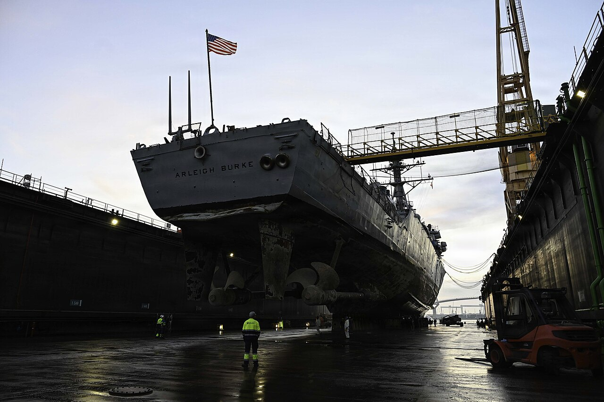
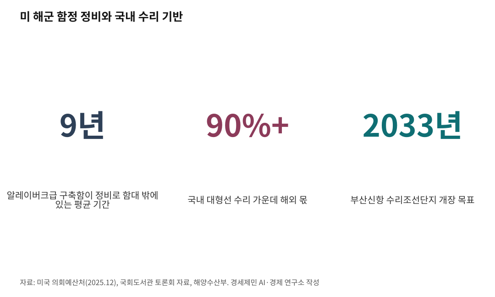
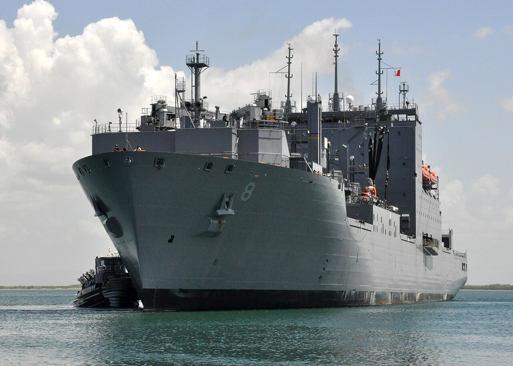
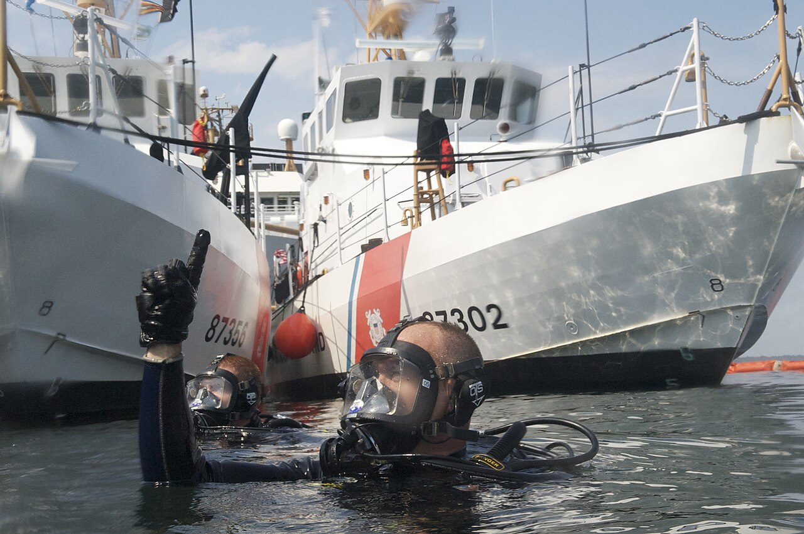
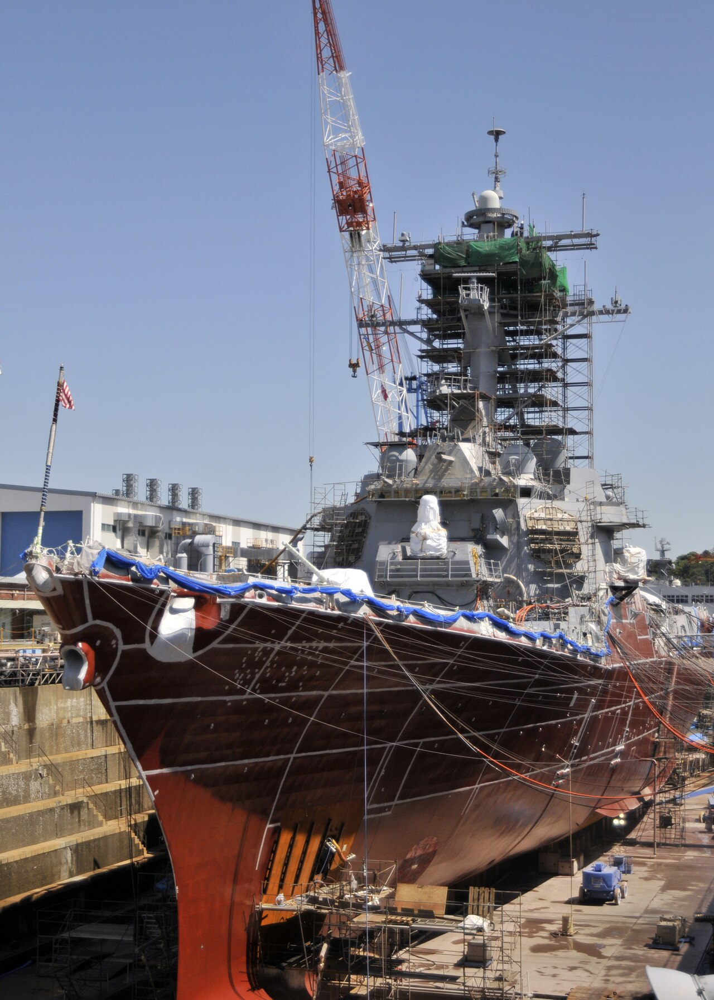

[해양 AI 융복합⑨] 미 해군 함정 고치는 한국 조선소, AI 정비 앞에 놓인 군 데이터 빗장
미 구축함 수명 4분의 1이 정비 기간, 거제·울산에 든 미 군수지원함
국내 대형선 수리 90% 이상 해외, 2033년 부산신항 수리조선단지까지
배는 한 번 지으면 수십 년을 바다에서 쓴다. 미국은 자국 군함을 제때 고치지 못하고, 한국은 짓는 힘에 비해 고치는 기반이 얇다. 수리조선과 선박 MRO(유지·보수·정비)에 AI가 들어설 자리와 그 앞을 막아선 벽을 사실로 짚는다.
1. 도크에서 늙어 가는 미 구축함

미국 의회예산처(CBO)는 2025년 12월 10일 미 해군 정비 지연 보고서를 냈다. 이 기관 추산으로 알레이버크급 구축함은 정비 때문에 평균 9년을 함대 밖에서 보낸다. 계획 수명의 4분의 1이 넘는다.
2012년 해군 정비계획이 잡은 기간의 두 배를 웃돈다. 실제 정비는 해군 최종 일정보다 20~100% 더 걸리는 일이 잦았다. 최근 몇 해 사이 작전에 나설 구축함이 3분의 1 안팎에 그친 때도 있었다.
늦은 검사와 계약, 계획에 없던 추가 작업, 부품 조달 지연이 원인으로 꼽힌다. 미국 회계감사원(GAO)도 2025년 1월 보고서에서 같은 문제를 짚었다.
부품과 숙련 정비 인력이 모자란다. 정비를 거듭 미루는 일도 해군 수상함이 풀지 못한 과제로 남아 있다.

2. 거제와 울산으로 온 미 해군 군수지원함

미 해군은 모자란 정비 능력을 동맹국 조선소로 메운다.
한화오션과 HD현대중공업은 2024년 7월 미 해군과 함정정비협약(MSRA)을 맺었다. 이 협약이 있어야 미 해군 함정 정비 입찰에 들어갈 수 있다.
한화오션은 한 달 뒤 군수지원함 월리 쉬라함 정비를 따냈다. 국내 조선소가 처음 수주한 미 해군 함정 정비다. 이 배는 거제사업장에서 6개월가량 정비를 받고 2025년 3월 출항했다.
정비 도중 계약 때 몰랐던 손볼 곳이 나와 수정 계약을 맺었다. 김대식 한화오션 상무는 코리아중앙데일리 서면 인터뷰에서 그때 일을 밝혔다. 방향타가 심하게 부식돼 있었고, 설계도가 없어 조타 장치를 통째로 역설계해 다시 만들었다고 했다.
HD현대중공업은 2024년에는 입찰에 나서지 못했다. 울산조선소 도크가 새로 짓는 배로 꽉 차 있었다.
이 회사는 2025년 8월 4만1000t급 화물보급함 앨런 셰퍼드함 정비를 처음 따냈다. 처음 맡은 일은 60여 개 항목이었다. 작업 중 100여 개 항목이 더 나왔다. 이 배는 2026년 1월 6일 울산에서 출항했다.
3. 고장 나기 전에 고치는 정비

두 배 모두 뜯어본 뒤에야 일감이 드러났다.
함정 정비는 정해진 주기에 맞춰 뜯어보는 방식이 많다. HD현대는 상태기반정비로 옮겨 가려 한다. 장비 상태를 실시간으로 읽어 고칠 때를 정하는 방식이다.
김형택 HD현대 상무는 2025년 11월 14일 대한민국 MRO 국제 컨퍼런스에서 'Hi-CBM'을 소개했다. 주엔진과 가스터빈, 발전기, 전기추진 장치를 한 플랫폼에서 진단하는 시스템이다.
아이뉴스24가 전한 발표에서 그는 "제작사가 권장하는 2년 주기 정비라도 상태가 양호하면 늦출 수 있다"고 말했다. 장기적으로는 기관사 역할을 대체하는 것까지 개발 목표로 삼는다고 밝혔다.
미 해군도 같은 길을 간다. 구축함 피츠제럴드함에 AI 정비 예측 시스템 'ERM v4'를 실었다. 개발사 패덤5(Fathom5)는 2025년 1월 이 시스템이 선체와 기관, 전기 계통 센서값을 1초에 1만 개가량 읽었다고 밝혔다.
선체 바깥을 보는 일에도 AI가 쓰인다. 미국선급(ABS)은 2019년 4월 구글 클라우드 등과 시범사업을 마쳤다. 선체 사진에서 부식과 도막 손상을 AI가 찾아내는 일이다.
4. AI 정비를 가로막은 군 보안

AI 정비는 쌓인 기록을 먹고 자란다.
말레이시아 트렝가누대 등 연구진 10명은 2023년 1월 검토 논문을 냈다. 실린 곳은 '해양과학·공학 저널'이다. 해양 부식을 AI로 예측하고 찾아내는 연구 151편을 살폈다.
연구진은 사람이 하는 부식 검사가 오래 걸리고, 닿기 어려운 곳에서는 하기 힘들다고 본다. 데이터로 고장을 예측하는 모델은 실시간 자료와 과거 이력 자료에 크게 기댄다.
함정 정비 이력은 해군이 쥐고 있다.
김대식 상무는 2026년 9월 3일 국회도서관 토론회에서 이 문제를 꺼냈다. 그는 "AI를 활용한 상태기반 정비 시스템을 구축하려면 해군이 함정을 운용하며 축적한 정비 데이터가 제공돼야 한다"고 말했다.
지금은 군 보안 규정 탓에 도면과 정비 이력을 정비업체에 넘기기 어렵다. 김 상무는 보안을 지키며 자료를 나눌 근거를 규정에 넣자고 건의했다.
5. 수리 도크라는 숙제
수리 기반도 얇다. 토론회 자료는 국내 대형선 수리의 90% 이상이 해외에서 이뤄진다고 짚었다. 중국과 싱가포르 같은 곳이다.
해양수산부는 2026년 2월 부산항 신항 수리조선단지 민간 제안서를 받아 타당성 조사에 들어갔다. 민간 1조5000억원을 들여 3만t급 이상 대형선을 받는 단지다. 목표는 2028년 하반기 착공, 2033년 개장이다.
이 사업은 2016년 수익형 민자사업으로 시작했다. 2024년 5월 사업자 공모가 유찰되며 한 차례 멈췄다.
김대식 상무는 한국형 차기 구축함(KDDX)으로 시범사업을 하자고 제안했다. 인도한 뒤 정비까지 조선소가 맡는 방식이다. 2027년 국방예산에 KDDX 유지보수 준비 예산을 새로 넣자고도 했다.
그는 "함정을 건조하는 기술과 생산능력 면에서는 세계 어느 나라와 경쟁해도 이길 수 있다는 자신감이 있다"고 했다.
그는 이어 "MRO는 오랫동안 수행하지 않았기 때문에 건조만큼 자신감이 없는 것도 사실"이라고 말했다.
참고문헌
가. 정부·공공기관 보고서
· "Maintenance Delays for Conventional Navy Ships", 미국 의회예산처(CBO), 2025.12.10., https://www.cbo.gov/publication/61940
· "Navy Surface Ships: Maintenance Funds and Actions Needed to Address Ongoing Challenges"(GAO-25-106990), 미국 회계감사원(GAO), 2025.1.31., https://www.gao.gov/products/GAO-25-106990
나. 기관 발표자료
· "AI Driven Inspections"(ABS, Google Cloud and SoftServe Partner to Demonstrate Feasibility of AI-enabled Corrosion Detection), 미국선급(ABS) 누리집, 생산일자 미상(시범사업 발표 2019.4.), https://ww2.eagle.org/en/innovation-and-technology/data-and-digitalization/ai-driven-inspections1.html
다. 논문
· Md Mahadi Hasan Imran, Shahrizan Jamaludin, Ahmad Faisal Mohamad Ayob 외 7명, "Application of Artificial Intelligence in Marine Corrosion Prediction and Detection", Journal of Marine Science and Engineering 11(2), 256, 2023.1.21., https://www.mdpi.com/2077-1312/11/2/256
라. 언론 보도
· U.S. Naval Institute Staff, "CBO Report on Navy Ship Maintenance", USNI News, 2025.12.11., https://news.usni.org/2025/12/11/cbo-report-on-navy-ship-maintenance
· Alison Bath, "Navy's destroyers will lose roughly 25% of their service lives to maintenance, CBO says", Stars and Stripes, 2025.12.12., https://www.stripes.com/branches/navy/2025-12-12/navy-delays-destroyers-maintenance-20059480.html
· Geoff Ziezulewicz, "Destroyer Has Become First U.S. Navy Ship To Deploy Artificial Intelligence System", The War Zone, 2025.1.29., https://www.twz.com/news-features/destroyer-has-become-first-u-s-navy-ship-to-deploy-artificial-intelligence-system
· MI News Network, "U.S. Navy Gets Its First Warship Equipped With AI For System Monitoring", Marine Insight, 2025.1.30., https://www.marineinsight.com/u-s-navy-gets-its-first-warship-equipped-with-ai-for-system-monitoring/
· Aman Tripathi, "US Navy warship gets first AI system for ensuring battle-readiness", Interesting Engineering, 2025.1.30., https://interestingengineering.com/military/navy-ai-system-uss-fitzgerald
· Nick Blenkey, "Pilot project uses artificial intelligence to detect corrosion levels", Marine Log, 2019.4.25., https://www.marinelog.com/news/pilot-project-uses-artificial-intelligence-to-detect-corrosion-levels/
· 류정현, "한화오션, 美 해군 함정 '월리 쉬라'호 MRO 완료…국내 첫 사례", SBS Biz, 2025.3.13., https://biz.sbs.co.kr/article/20000222592
· 김세형, "한화오션, 미 해군 '월리 쉬라'호 MRO 마치고 출항", 스마트투데이, 2025.3.13., https://www.smarttoday.co.kr/ko-kr/articles/75149
· 이재림, "설계도 없이 미 군함 역설계 정비…한화, 145억 달러 정비 시장 노린다", 코리아중앙데일리, 2025.7.2., https://www.koreajoongangdaily.com/business/145/11792757
· 김민서, "불붙는 美군함 MRO 수주 경쟁…HD현대重 '올해 2~3척 입찰'", 이투데이, 2025.1.15., https://www.etoday.co.kr/news/view/2437508
· 유민환, "마스가 돛 단 HD현대…美 MRO 첫 수주", 서울경제, 2025.8.6., https://www.sedaily.com/article/14101487
· 박혜랑, "미 해군 함정 영도조선소 입항… HJ중공업, MRO 닻 올렸다", 부산일보, 2026.1.12., https://v.daum.net/v/20260112183012380
· 김이재, "HD현대중공업, 미 해군 함정 MRO 추가 수주… 첫 사업도 완수", 시대, 2026.1.7., https://www.sidae.com/article/2026010711264990765
· 나기천, "'가장 훌륭한 美 해군 MRO 파트너', HD현대重 두번째 함정 정비 수주", 스마트투데이, 2026.1.7., https://www.smarttoday.co.kr/ko-kr/articles/100508
· 남지완, "HD현대중공업, 美 해군 함정 MRO 추가 수주하며 파트너십 강화", 파이낸스스코프, 2026.1.7., https://www.finance-scope.com/article/view/scp202601070020
· 최란, "HD현대·한화오션, AI·디지털 기술로 함정 MRO 혁신 박차", 아이뉴스24, 2025.11.14., https://www.inews24.com/view/1907141
· 박한나, "함정 수출 '마지막 퍼즐' MRO…한화오션 'KDDX로 체계 구축해야'", 머니투데이, 2026.9.3., https://www.mt.co.kr/industry/2026/09/03/2026090313431114494
· 고은결, "글로벌 함정 MRO 판 커진다…'국내 실적 확보·업체 선정 방식 개선해야'", 헤럴드경제 미주판, 2026.9.2.(미국 서부 시각), https://www.heraldk.com/article/2026090223313455242
· 최민지, "KDDX 따낸 한화오션 'MRO 시범사업도 맡겨달라'", 디지털데일리, 2026.9.3., https://www.ddaily.co.kr/page/view/2026090316540184620
· 이윤, "'대형선박 90% 해외서 수리'…국회서 해양 MRO 경쟁력 강화 해법 찾는다", 아이뉴스24, 2026.9.2., https://www.inews24.com/view/2001296
· 조용수·이승배, "'한국서 만든 배, 수리는 중국으로'…MASGA가 드러낸 K-조선의 '잃어버린 30년 시장'", 해사신문, 2026.9.2., http://www.haesanews.com/news/articleView.html?idxno=150657
· 곽도흔, "1.5조 규모 부산항 신항 수리조선단지 조성 추진…민간제안서 접수", 이투데이, 2026.2.4., https://www.etoday.co.kr/news/view/2552836
· "부산항 신항 수리조선단지 10년 만에 재시동… 배후 주거지 '디에트르 더 리버' 관심", 파이낸셜뉴스, 2026.2.20., https://www.fnnews.com/news/202602201732264254
마. 사진 출처
· [사진1] Petty Officer 2nd Class Jett Morgan(미 해군), "USS Arleigh Burke Arrives at Navantia Shipyard in Cadiz for Dry Dock (9999600).jpg", 위키미디어 공용, 퍼블릭 도메인(미국 연방정부 저작물), https://commons.wikimedia.org/wiki/File:USS_Arleigh_Burke_Arrives_at_Navantia_Shipyard_in_Cadiz_for_Dry_Dock_(9999600).jpg
· [사진2] Chief Mass Communication Specialist Bill Mesta(미 해군), "US Navy 100609-N-8241M-061 USNS Wally Schirra (T-AKE 8) pulls into port at Naval Station Guantanamo Bay, Cuba.jpg", 위키미디어 공용, 퍼블릭 도메인(미국 연방정부 저작물), https://commons.wikimedia.org/wiki/File:US_Navy_100609-N-8241M-061_USNS_Wally_Schirra_(T-AKE_8)_pulls_into_port_at_Naval_Station_Guantanamo_Bay,_Cuba.jpg
· [사진3] 미 해안경비대, "Dive Signals (6977107747).jpg", 위키미디어 공용, 퍼블릭 도메인(미국 연방정부 저작물), https://commons.wikimedia.org/wiki/File:Dive_Signals_(6977107747).jpg
· [사진4] Mass Communication Specialist Seaman Charles Oki(미 해군), "US Navy 090415-N-2013O-002 Arleigh-Burke class guided missile destroyer USS Lassen (DDG 82) is in dry dock during dry dock ship's restricted availability at Fleet Activities Yokosuka.jpg", 위키미디어 공용, 퍼블릭 도메인(미국 연방정부 저작물), https://commons.wikimedia.org/wiki/File:US_Navy_090415-N-2013O-002_Arleigh-Burke_class_guided_missile_destroyer_USS_Lassen_(DDG_82)_is_in_dry_dock_during_dry_dock_ship%27s_restricted_availability_at_Fleet_Activities_Yokosuka.jpg
· [사진5] CEphoto, Uwe Aranas, "Kaohsiung Taiwan Floating-dock-Jong-Shyn-01.jpg", 위키미디어 공용, CC BY-SA 3.0, https://commons.wikimedia.org/wiki/File:Kaohsiung_Taiwan_Floating-dock-Jong-Shyn-01.jpg